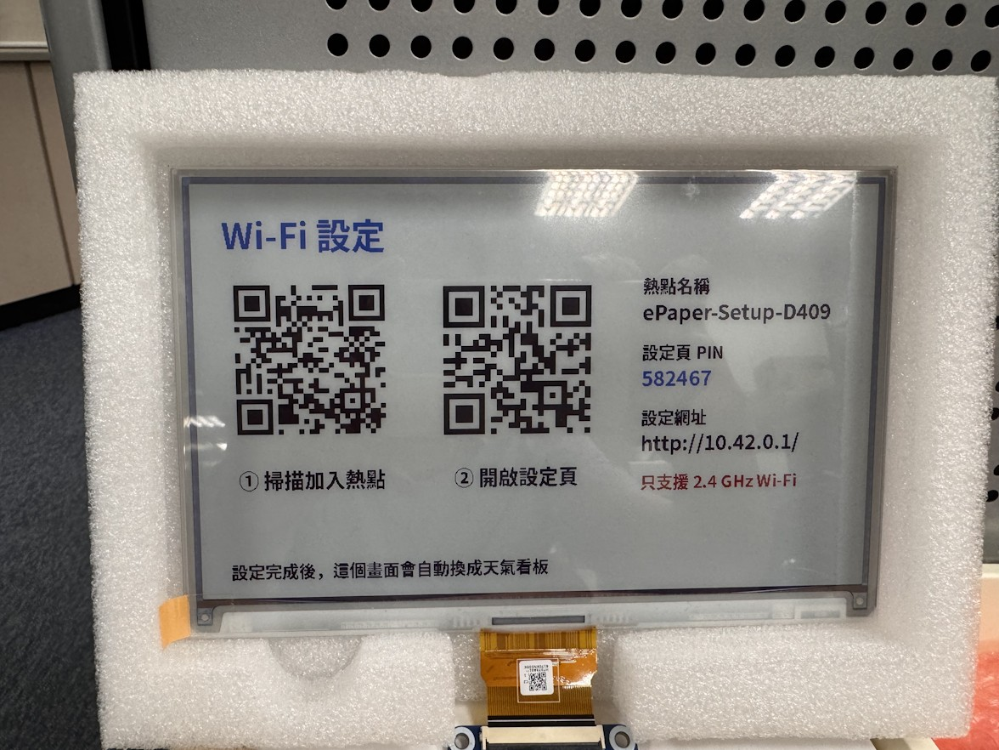

1
插電開機
首次使用或沒有可連線的 Wi‑Fi 時，等待約 2 分鐘，螢幕會顯示「Wi‑Fi 設定」。
這是一份給家人看的使用說明書。不需要懂電腦，只要跟著步驟，就能連接 Wi‑Fi、換城市、更新照片，讓天氣相框開始陪伴每一天。

以下為你原本 GitHub README 中的實機成果照片；組裝完成的外觀照可另外替換到這個版位，不影響網站及 QR Code。

當看板還沒連上網路，開機後會出現這張畫面。

首次使用或沒有可連線的 Wi‑Fi 時，等待約 2 分鐘，螢幕會顯示「Wi‑Fi 設定」。
用手機相機掃描實機左邊的 QR Code，加入 ePaper-Setup-XXXX 熱點。手機提示「無網際網路」時，仍請保持連線。
通常會自動跳出；沒跳出就掃實機中間的 QR Code，或在瀏覽器輸入 http://10.42.0.1/。
選擇家中的 2.4 GHz Wi‑Fi，輸入 Wi‑Fi 密碼、城市名稱，以及實機顯示的 6 位數 PIN，按「連線」。
手機可切回家中 Wi‑Fi。連線成功後，約 1–4 分鐘內看板會顯示天氣與照片。
請注意：照片中的 QR Code 是示意，不要掃它來設定另一台裝置；真正設定時，要掃自己的相框螢幕。6 位數 PIN 每次進入設定模式都會重新產生。相框只支援 2.4 GHz Wi‑Fi。
小提醒：設定熱點預設沒有密碼，請盡量在可信任、私密的環境完成配對。如果設定失敗，重新連上 ePaper-Setup-XXXX 並查看頁面提示即可。
看板連上家中 Wi‑Fi 後，手機也連到同一個家中網路，開啟以下設定網址。
搜尋想看的城市或地區，選擇結果並儲存。之後自動更新會使用新的地點。
用手機上傳喜歡的照片、刪除舊照片，或查看今天顯示的是哪張照片。
不想等下一次排程？在設定頁按「立即更新畫面」，等電子紙完成刷新。
換路由器或變更密碼時，在設定頁選擇重新設定 Wi‑Fi，再按照第一次設定流程操作。
看板開機連網後更新，平常約每小時整點檢查是否需要刷新。畫面沒變時可能略過更新。
在家中網路也能進入 epaper.local/help 查看較完整的原始專案說明。
提示：電子紙全畫面更新時會閃爍，約需 25 秒，屬正常現象。手機直式照片上傳後若方向不正確，可先在手機旋轉、另存後重新上傳。
這是正常的：你正在連接相框用來設定的臨時熱點，不是家中的網際網路。請選擇「保持連線」，再掃實機中間的 QR Code，或手動輸入 http://10.42.0.1/。
先確認手機目前連接 ePaper-Setup-XXXX，再使用瀏覽器開啟 http://10.42.0.1/；不要輸入 https://。若仍不行，可先關閉手機行動數據自動切換功能，再試一次。
請確認路由器有啟用 2.4 GHz 頻段。看板使用 Raspberry Pi 3，無法加入只有 5 GHz 的網路；隱藏網路可嘗試手動輸入 Wi‑Fi 名稱。
請輸入目前實機螢幕上的 6 位數，不要照著本頁照片中的範例輸入。連續輸入錯誤 5 次會暫時鎖定 5 分鐘。
完成設定後先等 1–4 分鐘。如果連線失敗，裝置會重新進入配對模式；重新加入它的熱點，查看設定頁顯示的錯誤，再確認家中 Wi‑Fi 密碼與頻段。
epaper.local 打不開？請確認手機與看板在同一個區域網路，而不是手機行動數據或訪客網路。也可以從家中路由器的裝置清單找出 Raspberry Pi 的 IP 位址，再用 http://裝置IP 開啟。
看板約每小時檢查更新，而且內容與前次相同時可能跳過刷新。可以進入設定頁按「立即更新畫面」。電子紙更新時暫時閃爍是正常現象。